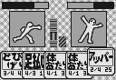
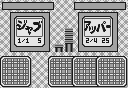
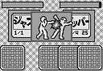
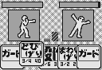

格闘カードゲーム
よむやも

いかに相手の行動を読んで、いかに相手の隙を作って、いかに相手より早い攻撃を繰り出すか。
読み（勘？）が物を言うカード式の格闘ゲームです。
★ 使用方法 ★
WinIsd（P/ECEコミュニケータ）で"yomyamo.pex"をＰ/ＥＣＥに転送して、実行してください。
タイトル画面で"EXIT"を選択すると終了します。
★ ルール ★
１対１の格闘ゲームです。カードを選択して攻撃を行い、先に相手のＨＰ（体力）を０にした方が勝ちです。
攻撃にはそれぞれ発生するまでの時間――「前動作」カウントが決められています。１Ｐと２Ｐが同時に攻撃を開始した場合、前動作の短い方の攻撃が当たり、攻撃を当てられた方は「くらい」状態となり選択した行動はキャンセルされます。
そして次の行動では、攻撃を当てた方はそれぞれの攻撃に決められた「後動作」カウント、当たった方は「くらい」状態の３カウントの隙（「足払い」、「投げ｣の場合は「転び｣状態の６カウント）が持ち越されます。つまり次の攻撃はそれぞれ、
攻撃を当てた 後動作カウント ＋ 次の攻撃の前動作カウント
攻撃を当てられた 「くらい」状態の３カウント（６カウント） ＋ 次の攻撃の前動作カウント
の時間が経ってから発生することになります。
例えばゲーム開始直後、お互い隙の無い状態で１Ｐが「ジャブ」（前動作１カウント）、２Ｐが「アッパー」（前動作２カウント）を選択したとします。１カウントの時間が経ったところで１Ｐの攻撃が発生し、前動作状態である２Ｐにヒットします。１Ｐは１カウントの「後動作」状態、２Ｐは３カウントの「くらい」状態になります。
次に１Ｐが「とびげり」（前動作３カウント）、２Ｐが「ストレート」（前動作２カウント）を選択したとすると、１Ｐの攻撃発生は１+３の４カウント後、２Ｐは３+２の５カウント後となり、再び１Ｐの攻撃が当たることになるわけです。

→ 
→ 
また攻撃以外に前動作カウント０の「ガード」があります。相手の攻撃発生に「ガード｣が間に合えば、ダメージ（「投げ｣以外）を受けることなく次の行動を隙０の状態で行うことが出来ます。
他に細かな点を以下にあげます。
・「足払い」、「投げ」が当たると相手は転び、隙は「くらい」状態の３カウントではなく「転び」状態の６カウントになります。
・１Ｐと２Ｐの攻撃が同時に発生した場合相打ちとなり、それぞれダメージを受けます。状態は相手の攻撃によって「くらい」、または「転び」になります。ただし「投げ｣は相打ちになることは無く、一方的に負けます。
・相手の攻撃発生と同時に「ガード｣状態になったときもガードは成立します。
・「投げ｣は「ガード」状態の相手にもダメージを与えられます。
攻撃、ガードといった行動は手持ちのカードを出すことによって行います。プレイヤー毎に２０枚あるカードはまず４枚ずつ配られ、行動選択時に１枚引いた５枚の中から選んで出していきます。
２０枚のカードはプレイヤーで独立していて、その中身は決まっています。内訳は「ガード」、「ジャブ」が３枚、他が２枚ずつとなっています。お互いのカードを混ぜたり、交換したりすることは無いので、一人のプレイヤーが「ガード｣を４回出したり「投げ｣を３回出したりすることはありません。
２０枚全てのカードを使いきっても決着がつかなかったときは、残りＨＰの多い方の勝ちとなります。
★ 行動一覧 ★
・ガード ３枚
相手の攻撃をガードします。ガードに成功するとダメージは受けず、自分の隙は０、相手の隙は攻撃の後動作という非常に有利な状態になります。ただし、「投げ｣には負けてしまいます。
・ジャブ ３枚 攻撃力５ 前動作１ 後動作１
攻撃力はほとんどありませんので、主に早い前動作で相手の攻撃を止めるのに使われます。また当たった場合２カウント有利な状態になりますので、次の攻撃の布石にも使えます。
・ストレート ２枚 攻撃力１５ 前動作２ 後動作２
攻撃力、隙、どれもそこそこの攻撃です。当たればまだ自分に有利な状態が続きます。
・アッパー ２枚 攻撃力２５ 前動作２ 後動作４
後動作が長いためガードされると目も当てられない状態になるような攻撃ですが、出るのがそこそこ早いので使う機会は多いでしょう。当たっても少し不利な状態になるので、相手の攻撃がジャブ位だったら相打ちの方がましです。
・まわしげり ２枚 攻撃力２５ 前動作２ 後動作２
出るのが少し遅いですが攻撃力もあるし、当たれば有利な状態が続くのでうまく使っていきましょう。
・とびげり ２枚 攻撃力４０ 前動作３ 後動作４
前後の隙は大きいですが、当たれば大きい攻撃です。最後のとどめに使えれば後動作の長さは問題無いのですが。
・体あたり ２枚 攻撃力３０ 前動作４ 後動作１
前動作が非常に長い代わりに、後動作が短い攻撃です。ガードされても１カウントの不利で済み、当たればジャブと同じ２カウントの有利になります。
・投げ ２枚 攻撃力３０ 前動作４ 後動作６
相手のガードを読んで使いましょう。後動作が長いですがガードされることは無く、くらった相手は同じく６カウントの「転び」状態になるので次の行動に有利不利はありません。なお相打ちになることは無く、相手の攻撃と同時の場合は一方的にダメージを受けてしまいます。相手も「投げ｣だったときは何も起こりません。
・足払い ２枚 攻撃力１５ 前動作４ 後動作3
当てることが出来れば相手は「転び」状態になり、非常に有利な状態になります。たとえ相打ちでも隙の差は同じになります。
★ 操作方法 ★
方向キー カードの選択
Aボタン 選択カードの決定
STARTキー メニューを開く
SELECTキー サウンドON/OFF
ゲームモード
VS COM コンピュータと対戦します。
VS MAN 人対人で対戦します。「1P TURN」、「2P TURN」と表示されたらそれぞれのプレイヤーがカードを選択し、
「BATTLE！」と出たら二人で結果を見てください。
★ 注意 ★
このプログラムはフリーウェアです。配布・改造等は自由ですが、無保証です。
★ ありがとうございました ★
このプログラムでは、月刊電脳倶楽部に掲載されたMSY.氏のフォントデータ、、松本健一氏の音楽データをP/ECE用に変換して使用させていただきました。
作者の方々に感謝致します。